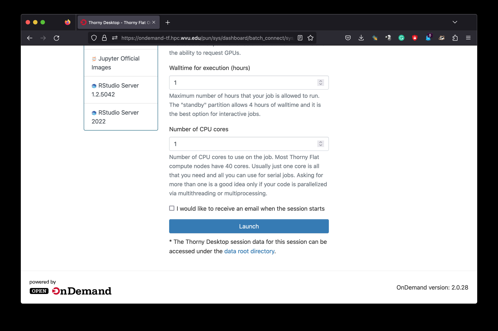
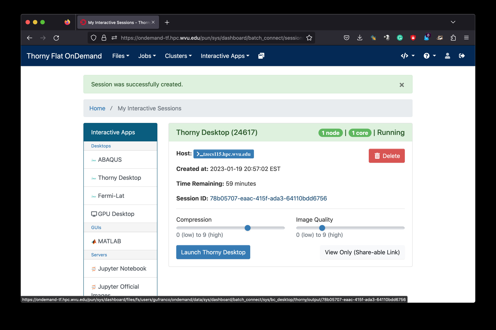
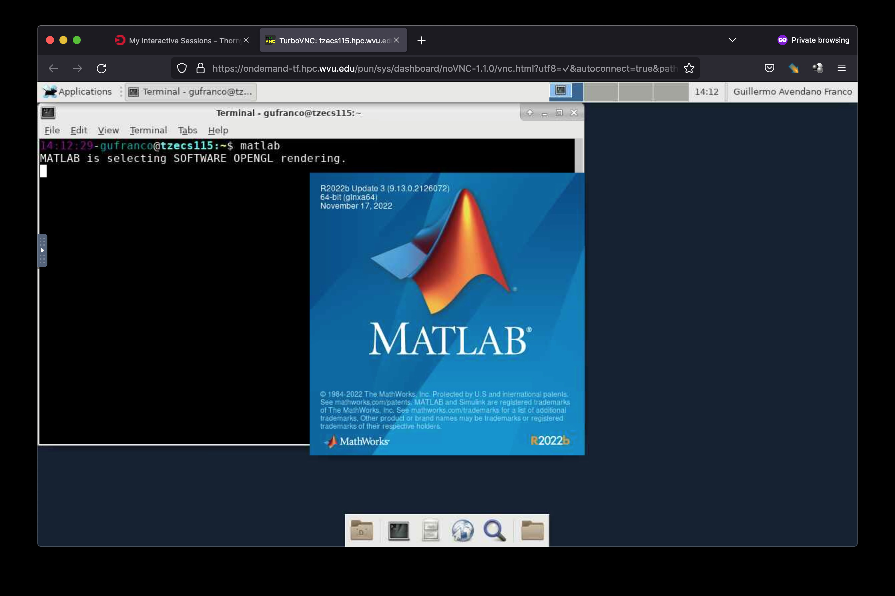
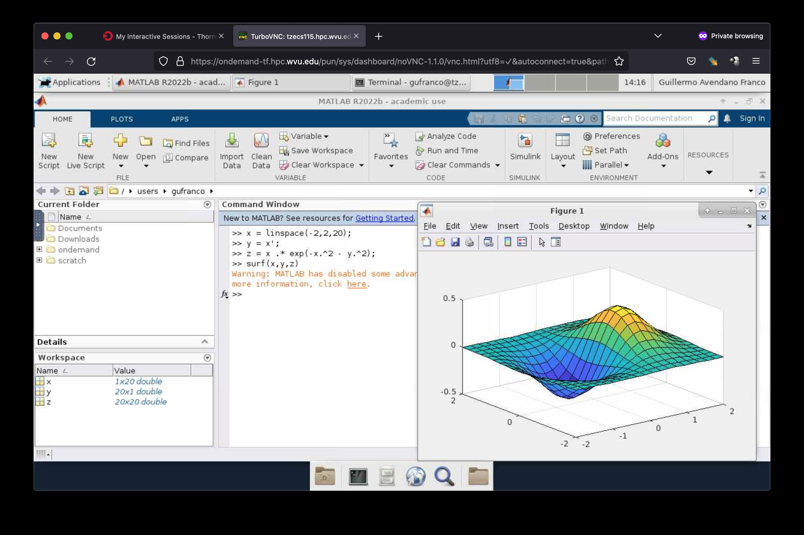

MATLAB¶
MATLAB (matrix laboratory) is a multi-paradigm numerical computing environment and proprietary programming language developed by MathWorks. MATLAB allows matrix manipulations, plotting of functions and data, implementation of algorithms, creation of user interfaces, and interfacing with programs written in other languages, including C, C++, C#, Java, Fortran and Python.
There are several ways of working with Matlab. As a desktop application you can work interactively using Matlab’s graphical user interface (GUI). There you can type commmands and see those executed in real time. You can also load scripts and produce plots. The GUI offers a variety of benefits, autocompletion, plot displaying and documentation.
An alternative to the GUI is a terminal-based interactive interface. You can execute the same commands but you work on a terminal. Depending if the terminal can create windows or not, you coul be forced to export plots as images instead of visualizing those directly on your screen.
Finally, ther is the option of executing Matlab scripts (.m files) calling Matlab as the interpreter of the code. This option is the closest to the original spirit of working on an HPC cluster. The work is prepared to be executed without human intervention once the job executes.
In the following sections we will cover how to request jobs under these three modes.
At the end we will present a small introduction to strategies to improve performance of Matlab jobs. One way is via Compiling the code, another is adding some parallelization to take advantage of multicore compute nodes.
Interactive execution using Open On-Demand¶
An HPC cluster is conglomerate of computers inteded to be operated as a single machine. This is different from the way you work on a normal desktop computer, we you are completely in control of the applications launched, many of them with graphical interfaces. The HPC cluster offers a web interface called Open On-Demand where you can launch an interactive job that creates a virtual desktop, allowing you to work on the cluster as close as possible as working on a desktop machine. The virtual desktop will be running on a compute node with all the computational power associated with it. The only downside could be the responsiveness to commands depending on how fast is the network between your computer and the the HPC cluster.
To Access Open On-Demand, direct your web browser to https://ondemand-tf.hpc.wvu.edu Open On-Demand support modern web browsers such as Mozilla Firefox, Google Chrome, macOS Safari and Microsoft Edge. Once you connect to https://ondemand-tf.hpc.wvu.edu you will be directed to WVU Single Sign-On (SSO). You will have to enter your username and password and authorize your access with DUO. Once you succeed in the authorization you will land on the Open On-Demand dashboard shown below.
{kind=link}
Click on “Interactive Apps” and select “Thorny Desktop” A formulary will ask you to selected the “partition,” “walltime” and number of “CPU cores” to use during your interactive session. The screenshots below show some good values for a normal execution of Matlab on the cluster.
{kind=link}
Here we are using “standby” as SLURM partition, 1 hour of walltime and 1 CPU core. There is not much advantage on requesting more than 2 CPU cores if your Matlab code is not using some sort of parallel programming. Go to the bottom and click “Launch”
{kind=link}
The browser tab will change to show you the current list of “Interactive Sessions” running in Open On-Demand. On the top of the list is your newely created “Thorny Desktop” session. It will be waiting from a few seconds to some munutes until a compute node is assigned to the job and the Virtual Desktop is created there. Once the virtual desktop is created a button “Launch Thorny Desktop” appears and clicking there will open a new browser tab with a view on a Linux desktop. The Linux desktop selected is very clean to prevent wasting resources. The screenshot below shows how the desktop looks like. Click on the Terminal button and load the module for Matlab
{kind=link}
{kind=link}
Once the module is loaded execute the command matlab on the terminal. With GUI of matlab will open after a few seconds. A screen will will show the version being loaded
{kind=link}
Now you can start executing matlab commands in the “Command Window”. You can also load .m files and create plots as shown below.
{kind=link}
Interactive execution on the terminal¶
Loading Matlab using Environment Modules¶
MATLAB is accessible via environment Modules on Thorny Flat. To check which versions are available execute:
trcis001:~$ module avail matlab
-------------------- /shared/modulefiles/tier1 --------------------
matlab/2021a matlab/2022b
Load the desired version with:
trcis001:~$ module avail matlab/2021a
or simply load the latest version executing:
trcis001:~$ module load matlab
Notice that the commands above load matlab on the login node. You must never use the login node for any execution that last for more than a few seconds. Computationally demanding calculations must be executed via job submissions.
From the login node, request a interactive session with SLURM:
trcis001:~$ module load sched/slurm/22.05
trcis001:~$ srun -n 4 --pty bash
srun: job 24328 queued and waiting for resources
srun: job 24328 has been allocated resources
tarcl100:~$
tarcl100:~$ module load matlab
Loading gcc version 9.3.0 : lang/gcc/9.3.0
Loading matlab version 2022b : matlab/2022b
tarcl100:~$ matlab
MATLAB is selecting SOFTWARE OPENGL rendering.
< M A T L A B (R) >
Copyright 1984-2022 The MathWorks, Inc.
R2022b Update 3 (9.13.0.2126072) 64-bit (glnxa64)
November 17, 2022
To get started, type doc.
For product information, visit www.mathworks.com.
>> 2 + 2
ans =
4
Non-interactive execution via job submission¶
This simple tutorial explains how to use Matlab without launching the graphical interface and using the submission script.
Consider this simple script that computes first and second derivatives of a function to find extrema and inflection points of a given function.
To download the code you can execute the following command directly on the cluster:
trcis001:~$ wget https://docs.hpc.wvu.edu/_static/derivatives.zip
Or download the file derivatives.zip.
And upload the file to the cluster.
You can create a directory for this, for example MATLAB_TUT1 and uncompress there the file derivatives.zip:
trcis001:~$ mkdir MATLAB_TUT1
trcis001:~$ cd MATLAB_TUT1
trcis001:~$ wget https://docs.hpc.wvu.edu/_static/derivatives.zip
trcis001:~$ unzip derivatives.zip
It will uncompress a file called derivatives.m. The file contains the matlab code that we would like to execute on the cluster.
Write a submission script for SLURM. For this example we will use a single core on a single machine (on Thorny Flat):: Use your prefered text editor and type the following lines:
#!/bin/bash
#SBATCH --job-name=MATLAB
#SBATCH --output=SLURM-%x.%j.out
#SBATCH --partition=standby
#SBATCH --time=10:00
#SBATCH --ntasks=1
#SBATCH --cpus-per-task=2
#SBATCH --mem-per-cpu=5000
module purge
module load matlab
cd $SLURM_SUBMIT_DIR
matlab -nodisplay -r derivatives
Store this lines into a file called runjob.slurm
This submission script is telling the SLURM workload manager that we are creating a job called “MATLAB”, that will use one node (–ntasks=1) and one core per node (–cpus-per-task=2), during 10 minutes (–time=10:00). The partition were the job is submitted is called standby but you can also choose other partitions such as comm_mmem_week or comm_mmem_day. that will offer extended periods of time.
The lines module purge and module load statistics/matlab/2014a will prepare the environment for executing Matlab on the HPC cluster.
Finally, the script will execute the matlab script “derivatives.m” without opening the graphical user interface (GUI). Notive that you should execute matlab -nodisplay -r derivatives without adding the “.m”. Matlab will always search for a file called “derivatives.m”
You submit the job from the command line executing:
trcis001:~$ module load sched/slurm/22.05
trcis001:~$ sbatch runjob.slurm
Submitted batch job 26212
When the job is submitted you get a number called Job ID. This number is an identifier that allow you to keep track of lifetime of the job. You can monitor the execution using the command squeue:
trcis001:~$ squeue -j 26212
JOBID PARTITION NAME USER ST TIME NODES NODELIST(REASON)
26212 standby MATLAB gufranco R 0:10 1 tbmcs101
You notice the job is running when the state (ST) shows as R and you see under TIME for how long the job has been running.
When finished, squeue will return an error as the job no longer exist in queue:
trcis001:~$ squeue -j 26212
slurm_load_jobs error: Invalid job id specified
You can see the job with sacct a command for accounting, ie keeping track of the jobs running and complete. When the job is still runnning you get:
trcis001:~$ sacct -j 26212
JobID JobName Partition Account AllocCPUS State ExitCode
------------ ---------- ---------- ---------- ---------- ---------- --------
26212 MATLAB standby its-rc-ad+ 2 RUNNING 0:0
26212.batch batch its-rc-ad+ 2 RUNNING 0:0
Once the job finishes, either by a normal termination or because it was canceled:
trcis001:~$ sacct -j 26212
JobID JobName Partition Account AllocCPUS State ExitCode
------------ ---------- ---------- ---------- ---------- ---------- --------
26212 MATLAB standby its-rc-ad+ 2 COMPLETED 0:0
26212.batch batch its-rc-ad+ 2 COMPLETED 0:0
When the job concludes, you will get new files that were created by the job:
trcis001:~$ ls -1
derivatives.fig
derivatives.m
derivatives.png
derivatives.zip
runjob.slurm
SLURM-MATLAB.26206.out
The figures where generated and saved on the same folder you submit your job. The output of your execution is stored on SLURM-MATLAB.26206.out

< M A T L A B (R) >
Copyright 1984-2014 The MathWorks, Inc.
R2014a (8.3.0.532) 64-bit (glnxa64)
February 11, 2014
To get started, type one of these: helpwin, helpdesk, or demo.
For product information, visit www.mathworks.com.
First Derivatives: Finding Local Minima and Maxima
==================================================
f =
(3*x^3 + 17*x^2 + 6*x + 1)/(2*x^3 - x + 3)
ans =
3/2
ans =
3/2
ans =
- 1/(6*(3/4 - (241^(1/2)*432^(1/2))/432)^(1/3)) - (3/4 - (241^(1/2)*432^(1/2))/432)^(1/3)
ans =
-1.2896
First Derivative: Local extremum Points
=======================================
g =
(9*x^2 + 34*x + 6)/(2*x^3 - x + 3) - ((6*x^2 - 1)*(3*x^3 + 17*x^2 + 6*x + 1))/(2*x^3 - x + 3)^2
ans =
((2841*((3^(1/2)*178939632355^(1/2))/176868 + 2198209/530604)^(1/3))/1156 + 9*((3^(1/2)*178939632355^(1/2))/176868 + 2198209/530604)^(2/3) + 361/289)^(1/2)/(6*((3^(1/2)*178939632355^(1/2))/176868 + 2198209/530604)^(1/6)) + ((337491*6^(1/2)*((3*3^(1/2)*178939632355^(1/2))/9826 + 2198209/9826)^(1/2))/39304 + (2841*((3^(1/2)*178939632355^(1/2))/176868 + 2198209/530604)^(1/3)*((2841*((3^(1/2)*178939632355^(1/2))/176868 + 2198209/530604)^(1/3))/1156 + 9*((3^(1/2)*178939632355^(1/2))/176868 + 2198209/530604)^(2/3) + 361/289)^(1/2))/578 - 9*((3^(1/2)*178939632355^(1/2))/176868 + 2198209/530604)^(2/3)*((2841*((3^(1/2)*178939632355^(1/2))/176868 + 2198209/530604)^(1/3))/1156 + 9*((3^(1/2)*178939632355^(1/2))/176868 + 2198209/530604)^(2/3) + 361/289)^(1/2) - (361*((2841*((3^(1/2)*178939632355^(1/2))/176868 + 2198209/530604)^(1/3))/1156 + 9*((3^(1/2)*178939632355^(1/2))/176868 + 2198209/530604)^(2/3) + 361/289)^(1/2))/289)^(1/2)/(6*((3^(1/2)*178939632355^(1/2))/176868 + 2198209/530604)^(1/6)*((2841*((3^(1/2)*178939632355^(1/2))/176868 + 2198209/530604)^(1/3))/1156 + 9*((3^(1/2)*178939632355^(1/2))/176868 + 2198209/530604)^(2/3) + 361/289)^(1/4)) - 15/68
((2841*((3^(1/2)*178939632355^(1/2))/176868 + 2198209/530604)^(1/3))/1156 + 9*((3^(1/2)*178939632355^(1/2))/176868 + 2198209/530604)^(2/3) + 361/289)^(1/2)/(6*((3^(1/2)*178939632355^(1/2))/176868 + 2198209/530604)^(1/6)) - ((337491*6^(1/2)*((3*3^(1/2)*178939632355^(1/2))/9826 + 2198209/9826)^(1/2))/39304 + (2841*((3^(1/2)*178939632355^(1/2))/176868 + 2198209/530604)^(1/3)*((2841*((3^(1/2)*178939632355^(1/2))/176868 + 2198209/530604)^(1/3))/1156 + 9*((3^(1/2)*178939632355^(1/2))/176868 + 2198209/530604)^(2/3) + 361/289)^(1/2))/578 - 9*((3^(1/2)*178939632355^(1/2))/176868 + 2198209/530604)^(2/3)*((2841*((3^(1/2)*178939632355^(1/2))/176868 + 2198209/530604)^(1/3))/1156 + 9*((3^(1/2)*178939632355^(1/2))/176868 + 2198209/530604)^(2/3) + 361/289)^(1/2) - (361*((2841*((3^(1/2)*178939632355^(1/2))/176868 + 2198209/530604)^(1/3))/1156 + 9*((3^(1/2)*178939632355^(1/2))/176868 + 2198209/530604)^(2/3) + 361/289)^(1/2))/289)^(1/2)/(6*((3^(1/2)*178939632355^(1/2))/176868 + 2198209/530604)^(1/6)*((2841*((3^(1/2)*178939632355^(1/2))/176868 + 2198209/530604)^(1/3))/1156 + 9*((3^(1/2)*178939632355^(1/2))/176868 + 2198209/530604)^(2/3) + 361/289)^(1/4)) - 15/68
ans =
1.2860
-0.1892
Second Derivatives: Finding Inflection Points
=============================================
h =
(18*x + 34)/(2*x^3 - x + 3) - (2*(6*x^2 - 1)*(9*x^2 + 34*x + 6))/(2*x^3 - x + 3)^2 - (12*x*(3*x^3 + 17*x^2 + 6*x + 1))/(2*x^3 - x + 3)^2 + (2*(6*x^2 - 1)^2*(3*x^3 + 17*x^2 + 6*x + 1))/(2*x^3 - x + 3)^3
ans =
1.8651543689917122385037075917613
0.57871842655441748319601085860196
Using the Matlab Compiler¶
The first step is to load matlab to get access to its executables:
trcis001:~$ module load matlab
Prepare the compilation environment with:
trcis001:~$ mbuild -setup
MBUILD configured to use 'gcc' for C language compilation.
To choose a different language, execute one from the following:
mex -setup C++ -client MBUILD
mex -setup FORTRAN -client MBUILD
You cannot compile matlab scripts that uses the symbolic toolbox
https://www.mathworks.com/products/ineligible_programs.html
So we will use another script for this tutorial.
Download the file mandelbrot.zip.
Or use wget directly from the cluster:
trcis001:~$ wget https://docs.hpc.wvu.edu/_static/mandelbrot.zip
After uncompress the file “mandelbrot.m”:
trcis001:~$ mcc -m mandelbrot.m
It takes a while, when finished you will get some extra files:
trcis001:~$ ls -1
mandelbrot
run_mandelbrot.sh
Write a submission script for SLURM (Thorny Flat):
#!/bin/bash
#SBATCH --job-name=MATLAB
#SBATCH --output=SLURM-%x.%j.out
#SBATCH --partition=standby
#SBATCH --time=10:00
#SBATCH --ntasks=1
#SBATCH --cpus-per-task=2
#SBATCH --mem-per-cpu=5000
module purge
module load matlab
cd $SLURM_SUBMIT_DIR
./run_mandelbrot.sh $MD_MATLAB
After submit the job with:
trcis001:~$ module load sched/slurm/22.05
trcis001:~$ sbatch runjob.slurm
Submitted batch job 26219
You get the results on “SLURM-MATLAB.26219.out” with the corresponding JobID
Mandelbrot fractal generated from Matlab¶